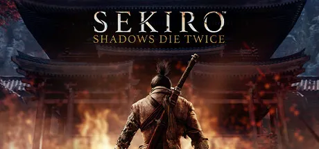

Sekiro: Shadows Die Twice is an action-adventure game developed by FromSoftware and published by Activision. It was released in March 2019 for Microsoft Windows, PlayStation 4, and Xbox One. The game is set in a reimagined late 1500s Sengoku period Japan and follows a shinobi known as Wolf as he attempts to take revenge on a samurai clan who attacked him and kidnapped his lord. The game features a unique combat system that emphasizes stealth, exploration, and precise timing, as well as a "posture" system that allows players to break an enemy's guard and deliver a critical strike. Sekiro received critical acclaim for its challenging gameplay, intricate world design, and deep lore, and won several awards, including Game of the Year at The Game Awards 2019. It is known for its high difficulty level and has been praised for its innovative approach to the action-adventure genre, offering players a rewarding and immersive experience.
Its a very challenging but rewarding game.